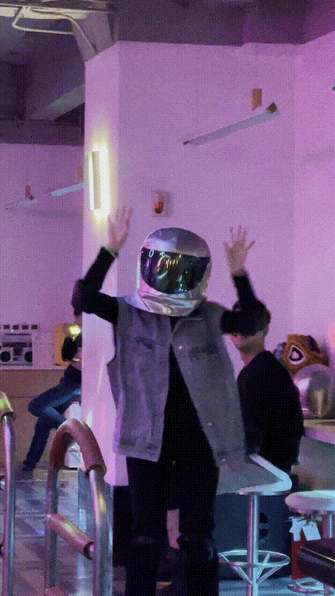

🎂
🥳
🕯️
🎉
🎁
🎈
🥂
🎵
🍰
✨
测测我们的友情浓度
[ INSERT NAME ]
MISSION:
破解寿星的生日聚餐地点。
请输入你的专属代号或昵称。验证失败将无法进入游戏！
START GAME
STAGE
1/8
🎂
LOADING...
STAGE CLEAR!
快把你的线索发到微信群里，集齐拼图解锁地点！

玩家
代号
解锁线索
X
📋 一键复制战报
SYSTEM LOCKED
连续失误！友情冷却中...
10
提示内容
CONFIRM